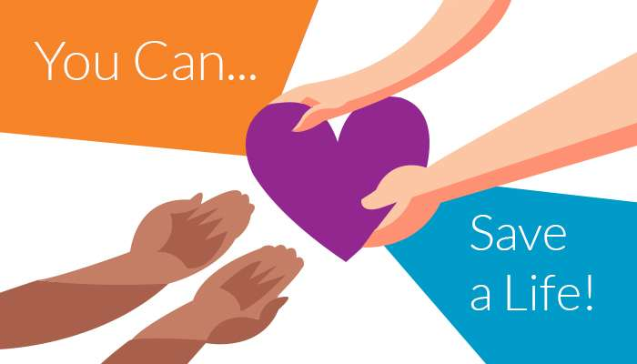

If you decide to consent to organ donation on behalf of a loved one, we need to ask you questions about the health and lifestyle of your deceased loved one. You may find some of these questions sensitive but they are necessary so that the transplantation process can proceed.Written consent is required from you, the next of kin, at the time of donation. Only organs that you give consent for can be donated and used for transplantation. We take blood tests, including one for viruses, to ensure that organs are suitable for donation. We will inform you if there are any health implications as a result of this testing.
Donation after circulatory death (DCD) occurs when a patient donates organs following the determination of death by cardio-respiratory criteria. A strict protocol is followed before this is considered. The medical team or the donor coordinators can provide more information.
Organ donation only takes place after your loved one has died. The operation is carried out by highly skilled doctors and nurses in the operating theatre in this hospital. The dignity and respect of your loved one is a priority at all times.
All religions support organ donation. If you have any concerns please speak to hospital staff.
